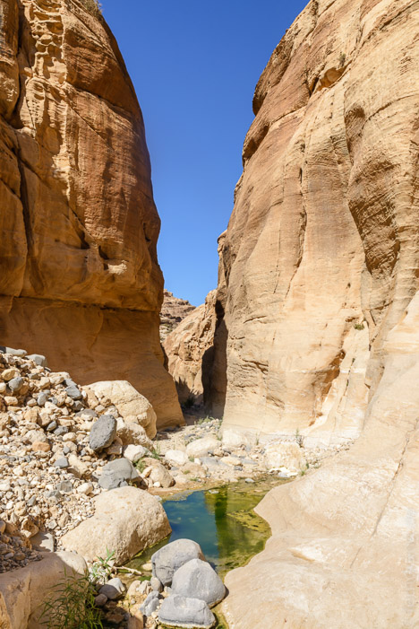
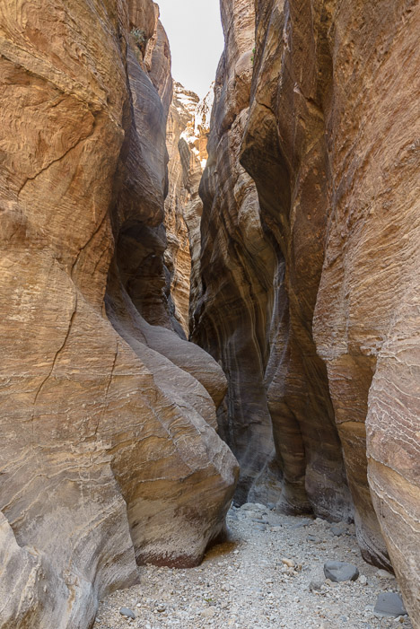
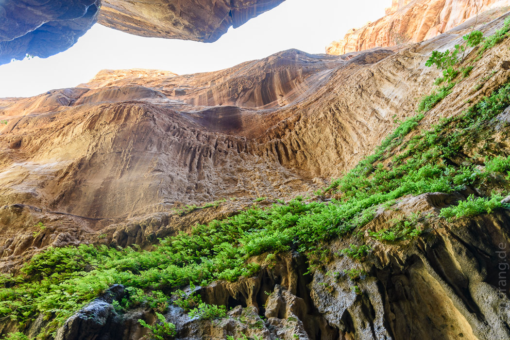
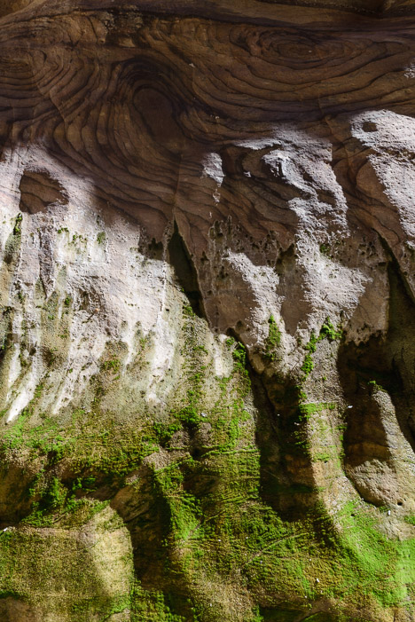
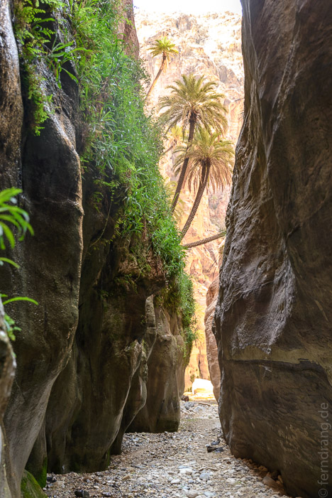
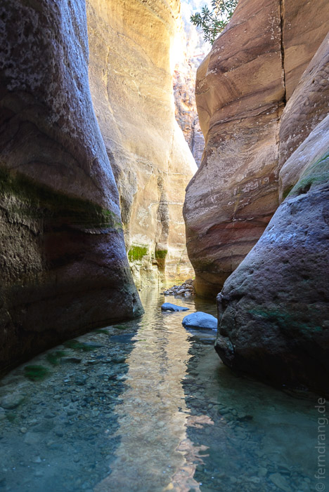
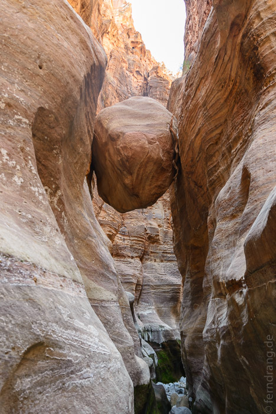
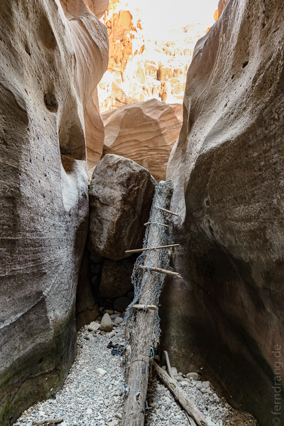
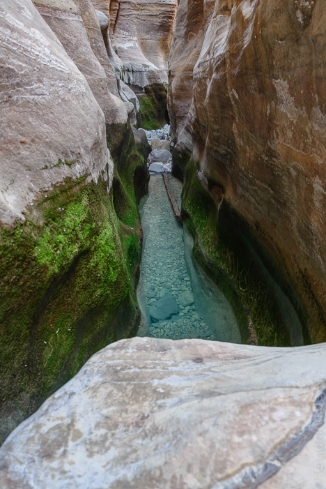

24/09/2016
Wadi Ghuweir
Es ist so schön in Dana, dass wir noch nicht weiter fahren wollen, und wir geraten vollends ins Wadi-Wanderfieber. Durch Zufall haben wir vom Wadi Ghuweir gehört, das sehr schön sein soll. Wir lassen uns zum Startpunkt fahren, der tief in einem Tal in der Nähe liegt. Keine Menschenseele begegnet uns auf der schlechten Straße. Uns wurde versichert, dass wir die Wanderung auch ohne Führer machen könnten, was uns sehr zupass kam. Der Weg führt 16km im Flußbett durch einen engen Siq. Am Ende sollen wir wieder abgeholt werden. Kurz bevor wir aufbrechen wirft uns der Fahrer noch ein Seil zu – für alle Fälle – und weg ist er.
 Nach ein paar Metern knickt der Weg ab und wir werden von senkrechten, 60m hohen Wänden verschluckt, die keine 3m auseinander stehen. Das Kiesbett ist so glatt, dass es wie angelegt wirkt. Die Schlucht ist genauso spektakulär wie der Wadi Mujib und protzt mit einem rot-orangenen Farbenspiel auf den glattgewaschenen Wänden. Doch hier gibt es auch Pflanzen. Wo das Wasser von den Wänden tropft, zieht sich ein grüner Teppich aus Moosen und Farnen entlang. Und wo die Schlucht etwas breiter ist, klammern sich sogar Palmen an die steilen Flanken. Das ist der Teil, den die Einheimischen Wadi Paradise nennen – was sie allerdings nicht davon abhält, hier nach einem Teepäuschen ihren Müll liegen zu lassen.
  Zwischendurch gibt es Stufen im Canyon, die nicht so ohne weiteres zu überwinden sind. Das Seil bleibt zwar im Rucksack, aber wir müssen richtig kraxeln. Witziger wird es an der nächsten Stufe, die über einen 3m langen glatten Fels überwunden werden muss. Darunter landen wir mit den Rucksäcken über dem Kopf in einem Pool. Das Wasser geht uns bis zur Brust.
   Der Rückweg im Auto dauert wieder über zwei Stunden, aber der Trip hat sich extrem gelohnt. Das Wadi Paradise ist ein echter Geheimtipp.